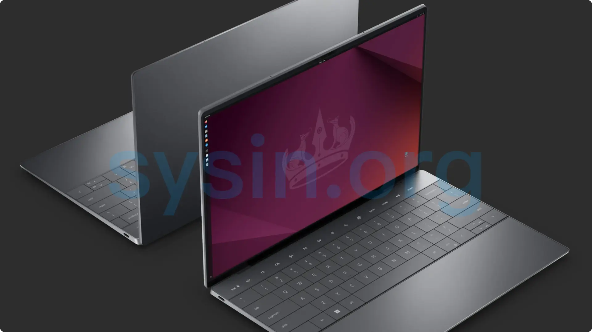

请访问原文链接：Ubuntu 26.04.1 LTS (Resolute Raccoon) 发布 - 现代化的企业与开源 Linux 查看最新版。原创作品，转载请保留出处。
抄袭是最廉价的捷径，撑不起门面，也遮不住灵魂的不堪。本站的沉默不是默许，是给你留的最后一点体面。
作者主页：sysin.org

Ubuntu 26.04 LTS 正式版发布
2026-04-23，Ubuntu 26.04 LTS 正式版按计划如期发布。
Ubuntu 26.04 LTS 搭载 Linux 内核 7.0 和 GNOME 50 桌面环境，两个都是优雅的整数版本。
以下是笔者对 Ubuntu 26.04 LTS（Resolute Raccoon）发布摘要总结，对比 Ubuntu 24.04 LTS (Noble Numbat) 的更新内容：
桌面环境
- 应用更新：Firefox 更新至 149/150，LibreOffice 24.2 → 25.8，Thunderbird 更新至 140 “Eclipse”，GIMP 2.10 → 3.0。
- GNOME 50：从 46 升级至 50。支持登录后自动启动应用、优化分数缩放以减少模糊、默认等宽字体大小与 UI 字体匹配、默认安装 Sysprof 性能分析工具。
- 默认应用替换： 文档查看器由 Evince 替换为 Papers（基于 GTK4 和 Rust）。图像查看器由 EOG 替换为 Loupe（Rust + Glycin）。终端由 GNOME Terminal 替换为 Ptyxis。视频播放器由 Totem 替换为 Showtime。音视频缩略图生成器由 Totem 缩略图器替换为 gst-thumbnailers（Rust GStreamer + Glycin）。
- 搜索与索引：Tracker Miners 重命名为 LocalSearch（3.8.2 → 3.11），索引特定文件需勾选安装第三方软件或手动安装提取器。
- 显示会话：Ubuntu 桌面会话仅运行在 Wayland 后端（GNOME Shell 不再支持 X.org），X11 应用可通过 XWayland 运行，其他桌面（KDE on X11, Xfce, MATE, i3 等）仍可使用 X.org。Nvidia 显卡现已完全支持 Wayland。
- 软件管理：默认不再包含“Software & Updates”应用（可手动安装）；App Center 改进（支持安装进度、自更新、Snap 消息、管理页直接卸载、触屏滚动、第三方 Deb 安装）；新增 Security Center（支持家目录权限提示实验功能），附带
prompting-clientsnap。 - 电源与性能：Power Profiles Manager 改进 (sysin)，支持新硬件（尤其 AMD）、多优化驱动、电池感知（仅电池时自动提高优化级别）；新增 NTSYNC 驱动，提升 Wine/Proton 上 Windows 游戏性能。
- 安装与镜像：新增通用 ARM64 桌面 ISO（支持 VM、ACPI+EFI、骁龙 WoA 设备，含骁龙 X Elite 初始硬件支持）；改进 BitLocker 保护下的 Windows 双启动体验（支持在旁安装、加密安装等高级选项）。
- 格式与编解码：原生支持 JPEG XL；默认通过 VA-API 为 AMD 和 Intel 用户提供硬件加速视频编解码；安装时可选第三方软件包集更新（含蓝牙 AAC 编解码器）。
- 更新与无障碍：系统更新不再弹窗抢焦点，改为通知+系统托盘图标；安装程序修复了大量屏幕阅读器无障碍问题。
- 遥测：Ubuntu Insights 将取代 Ubuntu Report，提供对非个人识别系统指标的控制，且为选入制（之前同意不会沿用）。
服务器
- OpenSSH：9.6p1 → 10.2p1；弃用 SHA1 SSHFP DNS 记录警告、移除弱 DSA 签名算法支持、新增 PerSourcePenalties、默认支持 mlkem768x25519-sha256 后量子密钥交换、新增 invalid-user 匹配选项、sshd.service 别名为 ssh.service、新增 openssh-client-gssapi 和 openssh-server-gssapi 包、不再生成主机 DSA 密钥、服务器自 1:9.6p1-3ubuntu17 起不再读取 ~/.pam_environment。
- 时间同步：Chrony 取代 systemd-timesyncd 作为默认时间守护进程（新安装），支持 NTS（认证加密 NTP），配置片段位于
/etc/chrony/sources.d/ubuntu-ntp-pools.sources。 - ClamAV：更新至 1.4.3，新增 OneNote 附件扫描、UDF 分区提取、HTML CSS 内嵌图像提取、alz/lha(lzh) 归档提取、图像模糊哈希开关、Office 文档 VBA 提取改进、–cache-size 自定义清理文件缓存、systemd.timer 用于 freshclam、大文件限制处理改进、私有 Freshclam 镜像客户端证书认证、病毒数据库最小年龄等。
- Django：4.2 → 5.2 LTS。
- PHP：更新至 8.5，包含属性钩子、非对称可见性、更新 DOM API、新 URI 扩展、管道运算符、Clone With、#[\NoDiscard] 属性、常量表达式中的闭包和一等可调用对象、持久 cURL 共享句柄、array_first() 和 array_last() 等。
- Dovecot：更新至 2.4.2（配置格式有重大变更）。
- Postfix：默认不再以 chroot 安装，且仅有有限的 chroot 支持。
- RabbitMQ：无法直接升级 (sysin)，需手动步骤（因特性标志）。
- Samba：更新至 4.23 版本，默认启用 SMB3 Unix 扩展、禁用 NetBIOS，并包含大量 AD/DC 相关改进、功能移除及包结构变化，升级前需注意 AD DC 组件与 i386 支持情况。。
- Squid：6 → 7.2；新增 tls_key_log、key-extras、doh_query、cache_peer tls-client-cert-switch；移除 client_delay_access、ftp_epsv、cache_peer no-netdb-exchange、client_persistent_connections、server_persistent_connections。
- SSSD：2.12 版本，现以 sssd 用户（而非 root）运行，需确保其可访问密钥等。
- strace：支持彩色输出（–color、STRACE_COLORS、NO_COLOR）。
- HAProxy：更新至 3.2 LTS；有破坏性变更（如 Runtime API 多命令检测、dynamic server 拒绝 enabled 关键字、非标准 URI 更严格解析、tune.ssl.ocsp-update 重命名为 tune.ocsp-update）。
- DocumentDB：新增，0.108-0 版本（基于 PostgreSQL 的 MongoDB 兼容文档数据库）。
- MySQL：8.0 → 8.4 LTS（8.4.8），移除 32 位 Server 支持（仍提供 armhf/i386 的客户端和客户端库）。
- MySQL Shell：8.0 → 8.4。
- PostgreSQL：更新至 18（新 I/O 子系统、虚拟生成列、uuidv7()、OAuth 2.0 认证等）。
- Valkey：更新至 9.0.3（原子槽迁移、哈希字段过期等）。
- 容器栈：containerd 和 runc 采用定期最新或稳定更新策略。
- 高可用与集群：kpartx-boot 包停用（功能并入 kpartx）；dmraid 包移除（建议用 mdadm 替代）；Pacemaker 更新至 3。
开发工具链
- GCC 14 → 15.2，binutils 2.42 → 2.45，glibc 2.39 → 2.42。
- Python 3.12 → 3.13.9（3.14 也可用）。
- LLVM 18 → 21。
- Rust 1.75 → 1.93（1.91、1.92 也可用）。
- Golang 1.22 → 1.25。
- Zig 新增，默认 0.14.1。
- OpenJDK 21 → 25（LTS 8/11/17/21 仍可用，含 26、27 preview），其中 OpenJDK 25 在 AMD64/ARM64/s390x/PPC64EL 上 TCK 认证。
- Spring® snaps：Gradle 和 Maven 插件可用于构建 Java 应用 ROCK 镜像。
- GraalVM snap：支持 JDK 21/24/25。
- .NET 8 → 10（并扩展至 IBM Power 平台），且有新版 .NET Snap。
- PowerShell snap：扩展至 arm64、s390x、ppc64el 架构。
企业相关
- authd（云认证）更新：EntraID 提供器修复与改进、新增 Google 提供器、支持 EntraID 设备注册、新增 authctl 命令行工具、UID/GID 处理等修复。
- ADSys：Active Directory Group Policy 客户端支持最新 Polkit，改进证书注册。
安全
- AppArmor：新增多个应用沙盒配置文件（可能需报 bug 调整）。
- TPM 全盘加密：支持密码短语管理与恢复密钥再生、更好固件更新集成。
- OpenSSL：支持 QUIC、后量子密码算法（ML-KEM、ML-DSA、SLH-DSA）、更广 EVP 覆盖及性能改进。
- cargo-auditable：Launchpad 上构建的 Rust 包可选启用，二进制内嵌入依赖元数据供漏洞排查。
硬件支持
- NVIDIA Dynamic Boost：在支持的 N 卡笔记本上默认启用（仅通电且 GPU 负载足够时生效，电池不生效）。
- Intel 显卡：支持 Core™ Ultra Xe2 集成 Arc™、Arc™ B580/B570 Battlemage 独立 GPU；Blender 等光线追踪性能提升；Battlemage 上 AVC/JPEG/HEVC/AV1 硬件加速编码；Intel® Compute Runtime 新 CCS 优化；调试支持；oneAPI Level Zero Ray Tracing 提升 AI/ML（Embree on SYCL）。
- Nvidia 挂起恢复：专有驱动中启用 suspend-resume 以防唤醒时损坏和冻结。
- ARM64 桌面平台：linux-generic 内核提供更广 UEFI 启动兼容 (sysin)。
- Raspberry Pi：新启动分区布局（测试新启动资源再提交，要求固件较新）；Pi 桌面镜像改为基于 desktop-minimal 种子（默认应用更少，列出移除清单并可手动清理）；swap 由 cloud-init 处理；RISC-V 仅支持 RVA23S64 ISA（无硬件时仅 QEMU -cpu rva23s64）。
- IBM Z：最低要求 z15（不支持 z14/LinuxONE II 及更旧），z15 及更新性能提升。
通用/底层变化
- sudo-rs：成为默认 sudo 提供器；原 sudo 重命名为 sudo.ws；sudo-ldap 包移除（建议用 PAM 做 LDAP 认证）。
- rust-coreutils：操作系统核心工具（如 base64 等）默认由该包提供（性能提升），同时仍提供经典 GNU coreutils 并可切换。
- Linux 内核：6.8 → 7.0；新增 sched_ext（eBPF 调度策略）、linux-lowlatency 包退休（改用 linux-generic + lowlatency-kernel 调 GRUB）。
- systemd 255 → 259：26.04 是最后支持 System V 服务脚本兼容的版本；默认使用上游 tmp.mount 单元（/tmp 现为 tmpfs）。
- Netplan 1.0 → 1.2：自定义 systemd-networkd-wait-online 逻辑、SR-IOV embedded-switch-mode 改进、解析器跳过损坏配置、ProtonVPN/Azure Linux 修复、wpa-psk-sha256 WiFi、NetworkManager 后端 routing-policy、非标准 OVS 设置支持。
- APT 2.7 → 3.1：新依赖求解器、TLS/哈希从 GnuTLS/gcrypt 切换到 OpenSSL、apt(8) 增加自动分页器、apt-key 移除（直接用 gpgv）。
- Dracut：取代 initramfs-tools 作为默认 initramfs 基础设施（仍支持 initramfs-tools 并可切换）。
为什么选择 Ubuntu Desktop
安全、现代，被数百万人使用的操作系统
全球数百万 PC 和笔记本电脑正在使用的第一开源操作系统。
✅ 专业开发者的首选
每次 Ubuntu 发布都会带来最新的应用程序、库和工具链。Ubuntu 是主要 IDE、游戏开发工具和 AI/ML 软件的首要平台。
✅ 满足你日常使用的所有需求
Ubuntu 提供网页浏览、通讯、游戏与内容创作的必备应用，包括 Firefox、Chrome、Discord、Steam 和 OBS Studio，满足你日常计算的所有需求。
✅ 为隐私与安全而设计
通过定期更新和内置安全功能，Ubuntu 优先保护用户隐私与系统完整性，是注重数据安全用户的可靠之选。
✅ 深度集成企业工具
Ubuntu 无缝集成企业环境。通过 Ubuntu Pro 订阅，你可以获得运行 Ubuntu 于高安全环境所需的所有工具：安全修补、设备管理等。任何人都可以免费在最多 5 台设备上使用 Ubuntu Pro，企业用户可免费试用 30 天。
✅ 完全开源
Ubuntu 始终免费供下载、使用与分享。我们相信开源的力量；如果没有全球志愿开发者社区，就不会有 Ubuntu。
为什么选择 Ubuntu Server
借助 Ubuntu Server 实现横向扩展
Ubuntu Server 为企业数据中心（无论是公有云还是私有云）提供经济性与技术性的可扩展能力。无论你是要部署 OpenStack 云、Kubernetes 集群，还是一个拥有 50,000 个节点的渲染农场，Ubuntu Server 都能提供业界领先的高性价比横向扩展性能。
✅ 性能与多功能性
Ubuntu Server 获得领先硬件厂商（OEM）认证，提供精简的初始部署，并包含集成的部署与应用建模工具，因此你可以最大化利用基础设施资源——无论你在部署 NoSQL 数据库、Web 集群，还是云环境 (sysin)。
✅ 可靠的发布周期
Ubuntu Server 的长期支持（LTS）版本默认为 Ubuntu Main 软件仓库中约 2,500 个软件包提供五年的标准安全更新。每六个月发布一次的中期版本带来新功能，而硬件支持更新则为所有受支持的 LTS 版本提供最新机器的兼容支持。
✅ 最广泛使用且值得信赖的平台
根据 OpenLogic 2025 开源生态支持报告，Ubuntu 是私有云实施的基础，也是全球使用最多的 Linux 发行版（连续第三年位居第一）。
下载地址
Ubuntu 26.04 LTS (Resolute Raccoon) GA, 2026-04-23
Ubuntu 26.04 LTS (Resolute Raccoon) 64-bit PC (AMD64 x86_64) desktop image
Ubuntu 26.04 LTS (Resolute Raccoon) 64-bit ARM (ARMv8 AArch64) desktop image
Ubuntu 26.04 LTS (Resolute Raccoon) 64-bit PC (AMD64 x86_64) server install image
Ubuntu 26.04 LTS (Resolute Raccoon) 64-bit ARM (ARMv8 AArch64) server install image
Ubuntu 26.04.1 LTS (Resolute Raccoon) Maintenance Releases, 2026-08-28
虚拟机模板下载：
更多：Linux 产品链接汇总

文章用于推荐和分享优秀的软件产品及其相关技术，所有软件提供免费版或试用版。内容若侵犯了您的版权，请联系作者删除。如果您喜欢这篇文章，或者觉得它对您有所帮助，亦或发现有不当之处；欢迎发表评论，也欢迎分享这个网站，或者赞赏一下，谢谢！提示：捐赠或赞赏属于自愿赠予行为，提交后即表示您对作者的支持与认可。为避免误操作，请在确认前仔细检查金额，支付完成后将无法撤销或退还。
 支付宝赞赏
支付宝赞赏  微信赞赏
微信赞赏赞赏一下
敬请注册！点击 “登录” - “用户注册”（已知不支持 21.cn/189.cn 邮箱）。 请勿使用联合登录（已关闭）。